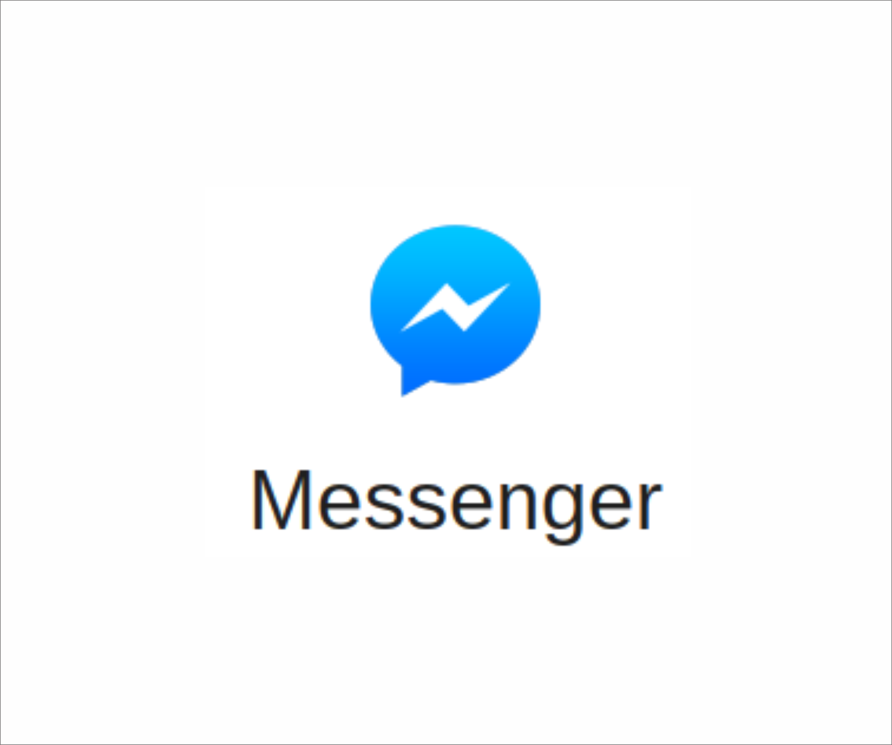
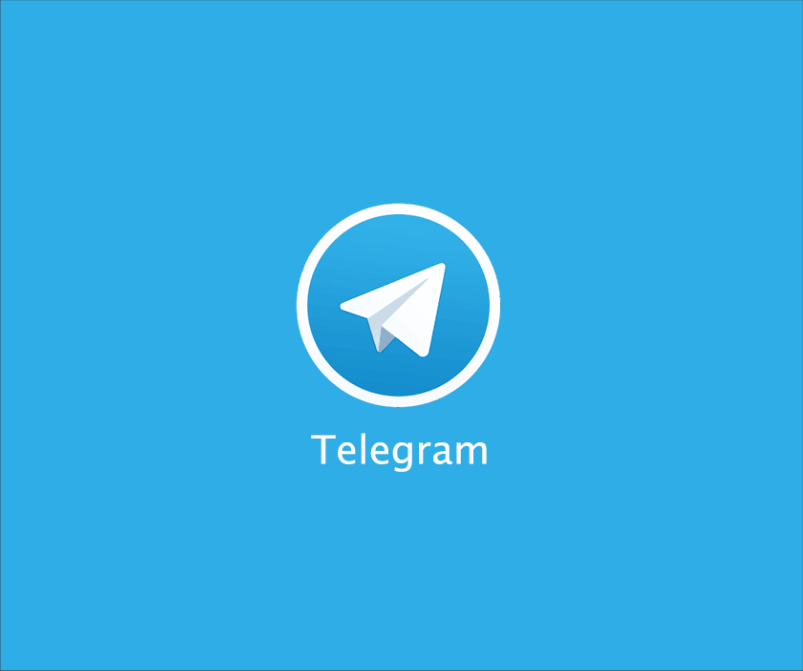

Introdução:
Três Softwares de aplicação sendo do gênero mensageiro instantâneo, cada um com suas particularidades, mas todos usando conexão com a rede seja por Wi-Fi ou dados móveis.

Facebook Messenger
- Nome do Software: Facebook Messenger.
- Categoria Software: Aplicação.
- Desenvolvedor: Facebook Inc.
- Breve descrição: É vinculado principalmente ao Facebook, mas agora também aos contatos do seu dispositivo. Usando-o você pode mandar mensagens de texto e voz, imagens, snaps, gifs, vídeos, stickers, localização. Chamadas de vídeo e voz também são possíveis.
- Link para download: Android, iOS, Windows Phone, Desktop.

Telegram
- Nome do Software: Telegram.
- Categoria Software: Aplicação.
- Desenvolvedor: Telegram Messenger LLP.
- Breve descrição: Usando-o você pode mandar mensagens de texto e voz, imagens, snaps, gifs, vídeos, stickers, localização. Chamadas de vídeo e voz também são possíveis. Seu diferencial é ser baseado na nuvem, podendo ser acessado por vários dispositivos diferentes e o chat secreto onde todas as mensagens usam end-to-end encrypyion, que significa que somente quem envia e quem recebe podem lê-las.
- Link para download: Android, iPhone/iPad, Windows Phone, PC/Mac/Linux, macOS.

Whatsapp Messenger
- Nome do Software: Whatsapp Messenger.
- Categoria Software: Aplicação.
- Desenvolvedor: Whatsapp Inc.
- Breve descrição: Usando-o você pode mandar mensagens de texto e voz, imagens, snaps, gifs, vídeos, stickers, localização. Chamadas de vídeo e voz também são possíveis.
- Link para download: Mobile, Desktop.